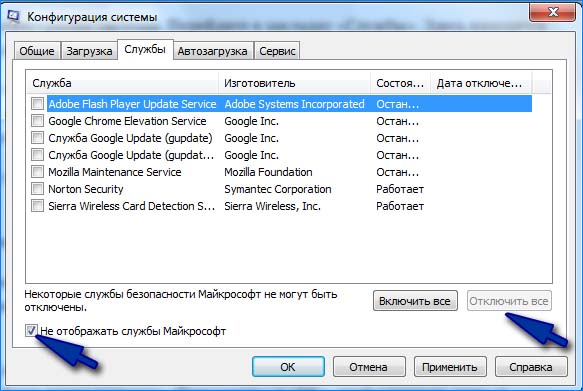
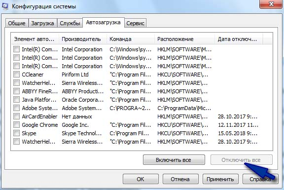

msconfig
Отобразится окно конфигурации системы. Перейдите в закладку «Службы». Здесь находится список всех системных служб, которые запускаются вместе с операционной системой.
В нижней части отметьте поле «Не отображать службы Microsoft». Благодаря этому в списке останутся только те, которые были добавлены сторонним программным обеспечением во время установки на компьютере.
Когда отображаются только службы, не являющиеся частью Windows, кликните на кнопку «Отключить все».
\
Затем перейдите на вкладку «Автозагрузка» и нажмите на
кнопку «Открыть Диспетчер задач».
Здесь в списке отображаются все программы, которые запускаются вместе с системой. Нажмите на каждую из них правой кнопкой мыши и выберите «Отключить». Для чистой загрузки нужно их все отключить.
Нажмите кнопку ОК в Диспетчере задач, чтобы
подтвердить настройки. Откроется окно Настройки системы. Здесь также нажмите
«Применить» и «ОК», чтобы закрыть окно, и сохранить изменения. Появится запрос,
применить изменения при перезапуске – выберите вариант сохранить изменения и
перезапустить.
Теперь компьютер после перезагрузки запустится в
режиме чистой загрузки, то есть без сторонних компонентов.